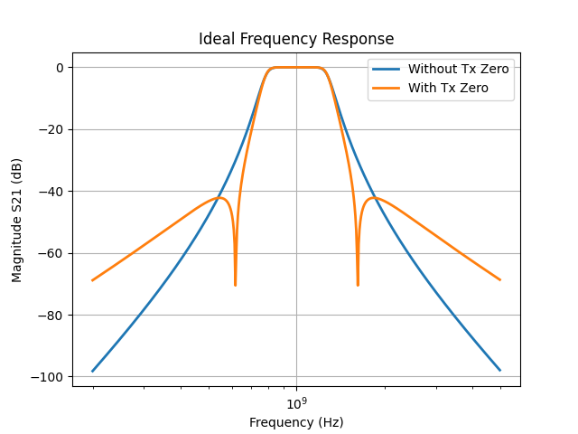
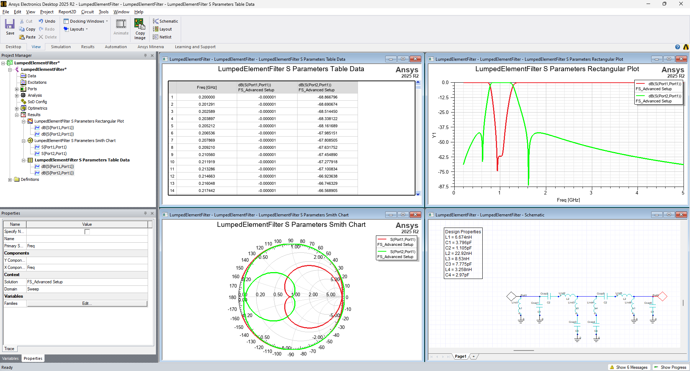
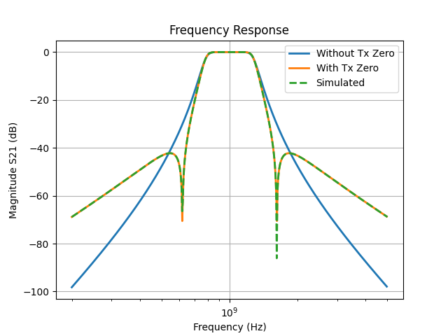

Download this example
Download this example as a Jupyter Notebook or as a Python script.
Lumped element filter design#
This example shows how to use PyAEDT to use the FilterSolutions module to design and visualize the frequency response of a band-pass Butterworth filter and export the lumped element model to AEDT Circuit.
Keywords: filter solutions
Perform imports and define constants#
Perform required imports.
[ ]:
import ansys.aedt.core
import ansys.aedt.core.filtersolutions
import matplotlib.pyplot as plt
from ansys.aedt.core.filtersolutions_core.attributes import FilterClass, FilterType
from ansys.aedt.core.filtersolutions_core.export_to_aedt import ExportFormat
from ansys.aedt.core.filtersolutions_core.ideal_response import (
SParametersResponseColumn,
)
Define constants.
[ ]:
AEDT_VERSION = "2025.2"
Define function used for plotting#
Define formal plot function.
[ ]:
def format_plot():
plt.xlabel("Frequency (Hz)")
plt.ylabel("Magnitude S21 (dB)")
plt.title("Frequency Response")
plt.xscale("log")
plt.legend()
plt.grid()
Create lumped filter design#
Create a lumped element filter design and assign the class, type, frequency, and order.
[ ]:
lumped_design = ansys.aedt.core.filtersolutions.LumpedDesign(version=AEDT_VERSION)
lumped_design.attributes.filter_class = FilterClass.BAND_PASS
lumped_design.attributes.filter_type = FilterType.BUTTERWORTH
lumped_design.attributes.pass_band_center_frequency = "1G"
lumped_design.attributes.pass_band_width_frequency = "500M"
lumped_design.attributes.filter_order = 5
Plot frequency response of filter#
Plot the frequency response of the filter without any transmission zeros.
[ ]:
freq, s21_db = lumped_design.ideal_response.s_parameters(SParametersResponseColumn.S21_DB)
plt.plot(freq, s21_db, linewidth=2.0, label="Without Tx Zero")
format_plot()
plt.show()

Add a transmission zero to filter design#
Add a transmission zero that yields nulls separated by two times the pass band width (1 GHz). Plot the frequency response of the filter with the transmission zero.
[ ]:
lumped_design.transmission_zeros_ratio.append_row("2.0")
freq_with_zero, s21_db_with_zero = lumped_design.ideal_response.s_parameters(SParametersResponseColumn.S21_DB)
plt.plot(freq, s21_db, linewidth=2.0, label="Without Tx Zero")
plt.plot(freq_with_zero, s21_db_with_zero, linewidth=2.0, label="With Tx Zero")
format_plot()
plt.show()

Generate netlist for designed filter#
Generate and print the netlist for the designed filter with the added transmission zero to the filter.
[ ]:
netlist = lumped_design.topology.netlist()
print("Netlist: \n", netlist)
### Printed output:
Netlist:
*
V1 1 0 AC 1 PULSE 0 1 0 1.592E-13 0
R0 1 2 50
*
* Dummy Resistors Required For Spice
* Have Been Added to Net List.
*
L1 2 0 6.674E-09
C2 2 0 3.796E-12
C3 2 3 1.105E-12
L4 3 4 2.292E-08
L5 4 5 8.53E-09
C5 5 0 7.775E-12
L6 4 6 3.258E-09
C6 6 0 2.97E-12
C7 4 7 1.105E-12
Rq7 4 7 5E+10
L8 7 8 2.292E-08
L9 8 0 6.674E-09
C10 8 0 3.796E-12
R11 8 0 50
*
.AC DEC 200 2E+08 5E+09
.PLOT AC VDB(8) -80 0
.PLOT AC VP(8) -200 200
.PLOT AC VG(8) 0 5E-09
.TRAN 5E-11 1E-08 0
.PLOT TRAN V(8) -0.09 0.1
.END
Export lumped element model of the filter to AEDT Circuit#
Export the designed filter with the added transmission zero to AEDT Circuit with the defined export parameters.
[ ]:
lumped_design.export_to_aedt.schematic_name = "LumpedElementFilter"
lumped_design.export_to_aedt.simulate_after_export_enabled = True
lumped_design.export_to_aedt.smith_plot_enabled = True
lumped_design.export_to_aedt.table_data_enabled = True
circuit = lumped_design.export_to_aedt.export_design(export_format=ExportFormat.DIRECT_TO_AEDT)

Plot the simulated circuit#
Get the scattering parameter data from the AEDT Circuit simulation and create a plot.
[ ]:
solutions = circuit.post.get_solution_data(
expressions=circuit.get_traces_for_plot(category="S"),
)
sim_freq = solutions.primary_sweep_values
sim_freq_ghz = [i * 1e9 for i in sim_freq]
sim_s21_db = solutions.data_db20(expression="S(Port2,Port1)")
plt.plot(freq, s21_db, linewidth=2.0, label="Without Tx Zero")
plt.plot(freq_with_zero, s21_db_with_zero, linewidth=2.0, label="With Tx Zero")
plt.plot(sim_freq_ghz, sim_s21_db, linewidth=2.0, linestyle="--", label="Simulated")
format_plot()
plt.show()

Download this example
Download this example as a Jupyter Notebook or as a Python script.